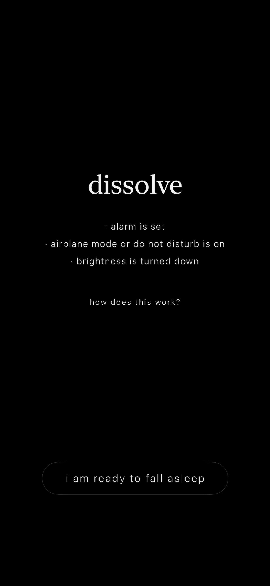

A five-minute sleep induction built around the hypnagogic state - the threshold between waking and sleep where the mind loosens its grip. Watch a field of shifting light dissolve. When prompted, put the phone down. Let the audio carry you under.

dissolve is a sleep induction tool built around one idea: the hypnagogic state. Hypnagogia is the threshold between waking and sleep - where thoughts loosen, imagery drifts in, and the mind begins to let go. Most sleep apps try to distract you into unconsciousness. dissolve tries to take you there directly, through a five-minute sequence of visual and audio stimulation designed to guide the brain toward that edge.
The session is structured, intentional, and has no settings to configure. You open the app, press begin, and follow it.
The particle system is rendered via a custom UIView subclass driven by CADisplayLink for smooth, frame-rate-locked animation outside of SwiftUI's rendering pipeline. Each blob is an ellipse with dynamic corner radius morphing, three-layer glow rendering using additive (.screen) blend mode, and independent phase clocks for scale, rotation, and color drift. The result is a field of luminous, organic light that avoids any mechanical or digital quality.
Audio is handled via AVAudioEngine with a custom signal chain, allowing real-time parameter manipulation during playback. Ambient music runs through a distortion node and a reverb node, both gradually increasing in wetness during the audio-only phase - creating a subtle sense of the sound becoming less anchored to physical space.
AVAudioPlayerNodeAVAudioUnitDistortion ramps from 0-18% wetness over the audio-only windowAVAudioUnitReverb (large chamber) ramps from 0-40% wetnessCADisplayLink-driven rendering at display frame rateAVAudioEngine with real-time distortion and reverb nodes@MainActor ObservableObject ViewModel with phase-driven session state machineCombine timer publisher at 50ms intervals driving phase transitions and audio parameter interpolationAppStorage for onboarding state